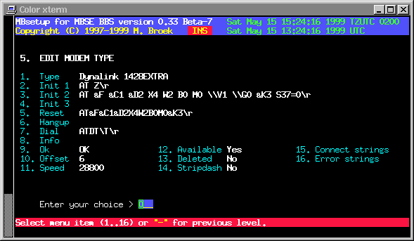

Last update 29-Jan-2001
MBSE BBS Setup - Modem types
Setup a modem.
Type The description of this modem. Init 1 The first modem init string. Init 2 The second init string (if needed). Init 3 The third init string (if needed). Reset Not in use Hangup Only needed if drop DTR doesn't work. Dial The dial command. Info Command to get caller-id (not tested). Ok The modem "OK" response. Offset The answer/connect time offset. Speed The maximum modem linespeed, ie 28800. Available If this modem is available. Deleted If this modem must be deleted. Stripdash Strip dashes from the dial command. Connect strings Here you can define 20 connect strings. Error strings Here you can define 10 non-connect strings.
Special characters
\\ Send one backslash. \r Send the CR character. \n Send the LF character. \t Send the TAB character. \b Send the BS character. \s Send a space character. \d Wait one second. \p Wait 0,25 second. \D Send untranslated phone number. \T Send translated phone number.
The Hangup field
This is only needed if your modem doesn't hangup by dropping the DTR line for one second. Most modems do that if &D2 or &D3 is in the init string.
The Offset field.
The Offset field is to calculate the cost for outgoing calls. Analogue modems need time to establish the connection, 6 seconds is quite common. So when you see the CONNECT BLABLA message, the phone connection is there already 6 seconds and you are already paying for 6 seconds. This offset is thus added to the total calculated connect time for cost calculations. For ISDN modems this can be 1 or 0.

 Back to index
Back to index